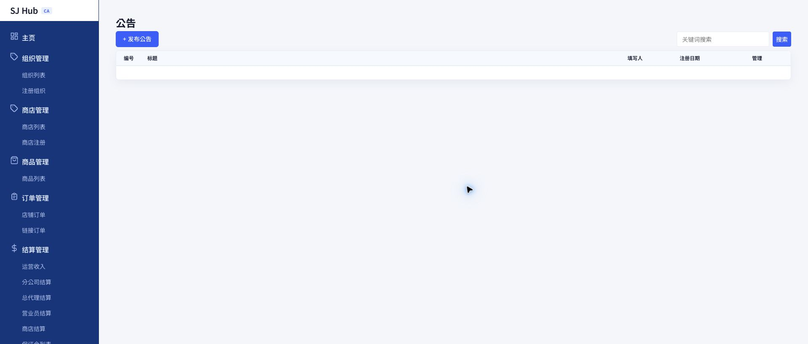

| 화면에 보이는 한국어 | 의미 (중文 설명) | 형태 |
|---|---|---|
| 제목 * | 공지 제목 (필수, 최대 100자) | 텍스트 |
| 중요 공지로 등록 | 체크하면 목록에 "중요" 뱃지가 표시됩니다 | 체크박스 |
| 공지 유형 | 전체공지 또는 개별공지 선택 | 선택 |
| 브랜드 선택 | 개별공지일 때만 나타나며, 받을 상점을 1개 이상 체크 | 체크박스 목록 |
| 내용 * | 공지 본문 (필수) | 에디터 |
| 팝업 간단 문구 | 팝업 미리보기 문구, 최대 150자 | 텍스트(선택) |
| 팝업 이미지 | JPG/PNG, 권장 800×400px, 드래그앤드롭 | 이미지(선택) |